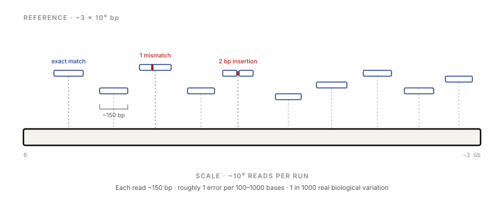
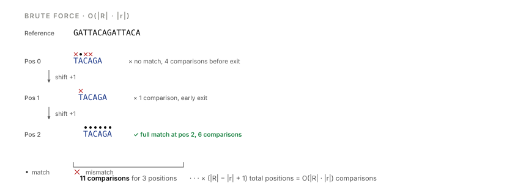
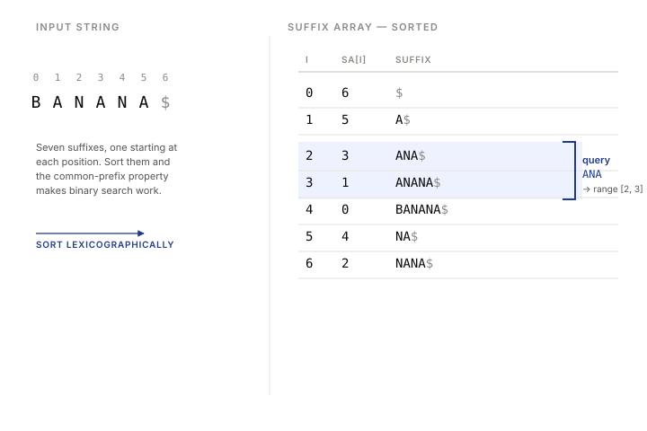
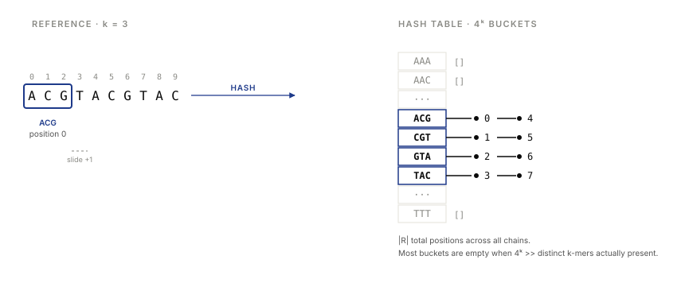
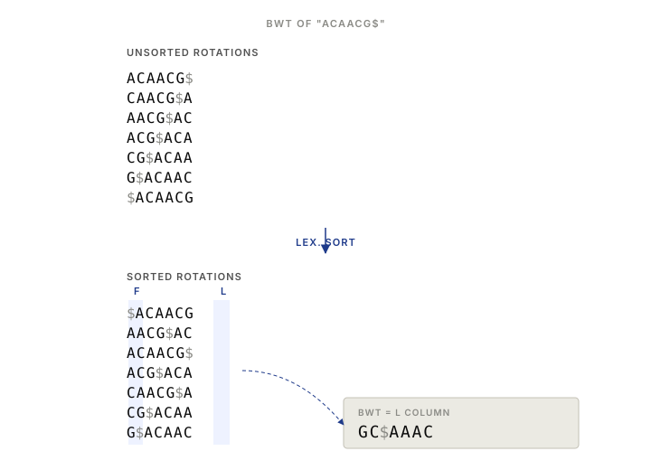
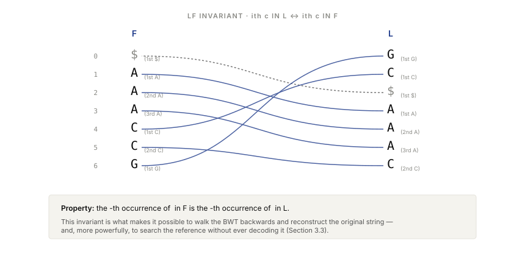
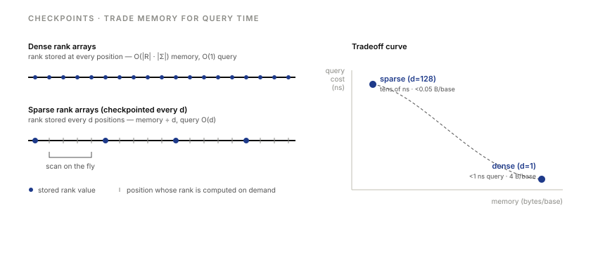
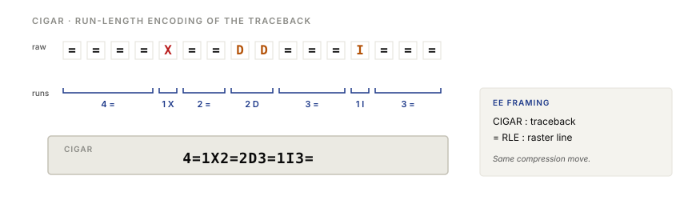
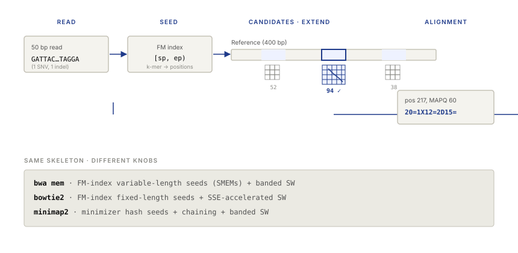

Four moves: index the reference, shrink the index, score approximate matches, compose the two.
Learning objectives
- State the read-alignment problem formally and estimate its computational scale for human sequencing.
- Compare brute force, suffix-array binary search, and hash-based indexing in time and space.
- Construct the Burrows-Wheeler Transform of a string and invert it using the LF mapping.
- Perform backward search on an FM index by hand, and explain how checkpoints trade memory for time.
- Fill out a Smith-Waterman dynamic-programming matrix and read off a CIGAR string from the traceback.
- Explain why every production aligner (
bwa,bowtie2,minimap2) is built on seed-and-extend, and identify the seed index and extension algorithm each uses.
Part 1 · 20 min The Alignment Problem
1.1 Why align reads
A sequencing run produces hundreds of millions of short strings of A, C, G, T — reads — and a quality score for each base. Lecture 1 ended there. That's the raw output, and by itself it's almost useless. Nothing downstream — variant calling, expression quantification, ChIP-seq peak finding, methylation analysis, structural variant detection — works on an unordered pile of 150-base-pair fragments. All of it needs the reads placed back onto a reference genome: "this read came from chromosome 3, position 47,291,108, matching with one mismatch."
That placement is read alignment. It is almost never the product of a bioinformatics pipeline — it is the substrate on which everything else runs. A modern genomics lab will generate terabytes of reads per week and spend most of its compute aligning them. Getting alignment right, and fast, is the bottleneck that determines whether the rest of the analysis is tractable.

1.2 Formal statement and scale
The problem, stated cleanly: given a reference string R over the alphabet {A, C, G, T} and a read r, find all positions i such that R[i..i+|r|−1] matches r within some edit distance k. For the human reference, |R| ≈ 3 × 10⁹; for an Illumina read, |r| ≈ 150; for a typical whole-genome run, you align about 10⁹ reads. Do the arithmetic once, out loud: that is roughly 3 × 10¹¹ candidate positions per read, times 10⁹ reads, gives 3 × 10²⁰ comparisons in the naive worst case. This does not fit in any time budget anyone has.
The scale is what forces everything that follows. If the genome were a kilobyte, brute force would be fine and this lecture would be ten minutes long. It isn't, so the algorithms we use are ones that were largely invented — or adapted — for exactly this problem, and they are beautiful.
1.3 Exact vs. approximate, and the shape of the solution
Two complications separate read alignment from plain-string search. The first is that reads contain errors — sequencing noise at about 0.1–1% per base for Illumina, higher for long reads — and the genome you sequenced differs from the reference at about 1 base in 1,000 due to real biological variation. Exact match is the wrong target. The right target is "best approximate match," under some scoring scheme.
The second is that you have to do this a billion times against the same reference. The reference is fixed; the reads are not. This asymmetry is everything. Any work you can do once, on the reference, to speed up a billion subsequent queries is a good investment. Any work you do per-read had better be cheap.
Every production aligner exploits both facts the same way. They index the reference once, producing a data structure that supports fast exact lookup of short substrings — 20 to 30 bases, typically. They use that index to find candidate positions per read — seeds — then run a slower, accurate, error-tolerant algorithm on small windows around each seed to produce the final alignment. This two-phase structure — fast exact coarse detection, slow approximate fine estimation — is the seed-and-extend pattern, and it is what every real aligner does.
This lecture is organized by that split. Parts 2 and 3 build the fast exact index — first naively, then with suffix arrays, hash tables, and finally the Burrows-Wheeler/FM index that real aligners actually use. Part 4 builds the slow accurate extension algorithm — Smith-Waterman — and shows how its output is serialized into the CIGAR strings stored in BAM files. Part 5 composes the two.
Part 2 · 55 min Exact Matching: Indexing the Reference
2.1 Brute force and its complexity
The simplest algorithm for finding a read in a reference is to slide the read along the reference one position at a time and, at each position, check every character for a match. It is correct. It is easy to write in six lines of Python. And at human-genome scale, it is hopeless.
for i in range(len(R) - len(r) + 1):
if R[i:i+len(r)] == r:
yield i

The cost is O(|R| · |r|) in the worst case: at each of |R| − |r| + 1 positions, you may compare up to |r| characters. Real implementations exit early on mismatch, which helps on random text but not on repetitive genomes — and much of the human genome is repetitive. The exit-on-mismatch trick changes the constant, not the asymptotic.
Put numbers on it. For a 1 kb reference and a 100 bp read, you have roughly 900 × 100 ≈ 10⁵ character comparisons in the worst case. For the human genome at 3 Gb, you have roughly 3 × 10¹¹ character comparisons per read, times 10⁹ reads. Even at a billion comparisons per second per core, that is 3 × 10¹¹ core-seconds per dataset — about ten thousand CPU-years.
Nobody uses brute force. The reason to see it clearly is that every algorithm to follow has to earn its complexity against this baseline. It also establishes the unit of account: character comparisons. Every index we build is a way to avoid doing them.
2.2 Suffix arrays and binary search
A suffix of a string R is a substring that ends at the last character: for R = BANANA$, the suffixes are BANANA$, ANANA$, NANA$, ANA$, NA$, A$, and $. The trailing $ is a sentinel character that compares less than every real character; its purpose is to force every suffix to be unique and to give us a clean place for lexicographic comparisons to terminate.
Here is the first idea that pays for itself. Sort the suffixes lexicographically. The result is a list of all positions in R, reordered so that if you look at the substring starting at each position, the substrings are in dictionary order. The suffix array SA stores, for each rank in the sorted order, the position in R where that suffix begins — for BANANA$, SA = [6, 5, 3, 1, 0, 4, 2]. Figure 3 lays it out row by row.

BANANA$. The rows whose suffixes start with ANA form a contiguous range — which is why binary search works.Now the second idea. A read r occurs at position i in R if and only if r is a prefix of the suffix of R starting at i. In the sorted list, all suffixes that share a prefix are contiguous — they form a block. So finding all occurrences of r in R reduces to finding the block of suffixes that begin with r. Since the list is sorted, we find the block's left and right boundaries with two binary searches, each of which performs at most log₂ |R| comparisons, each of which examines at most |r| characters. Total: O(|r| log |R|) per query.
For the human genome, log₂(3 × 10⁹) ≈ 32. With |r| = 150, that is about 4,800 character comparisons per read — against the 3 × 10¹¹ of brute force. Nearly eight orders of magnitude, for the cost of building the suffix array once.
The suffix array costs memory. Naively, it is |R| integers of position data. For the human genome at 3 Gb, with 4-byte integers, that is 12 GB — before you've stored R itself. There are tricks to shrink it (compressed suffix arrays, sparsification), but the uncompressed form is already a lot of RAM.
Construction itself is not free either. A naive sort of suffixes is O(|R|² log |R|) because string comparisons are O(|R|) worst case. The classical algorithms — DC3, SA-IS — bring this to O(|R|), which for the human genome takes minutes to tens of minutes and is done once.
2.3 Hash maps and k-mer indices
The second indexing approach drops sortedness and replaces it with hashing. Pick a length k — typically 12 to 30. Enumerate every k-mer in R, and store a map from each distinct k-mer to the list of positions where it occurs. Figure 4 shows the pattern on a small example.

To query, hash the first k characters of the read and look up the position list. Each position is a candidate — the read might occur there, or it might just share a k-mer there. You verify by checking the rest of the read. Lookup is O(1) per query; verification is the expensive part.
The memory cost is the catch. The hash table has up to 4k buckets, and across all buckets, the position lists sum to |R| entries. For k = 12, the bucket count is 4¹² ≈ 1.7 × 10⁷, which is manageable; for k = 15, it is 4¹⁵ ≈ 10⁹, which starts to hurt; beyond that, most buckets are empty and you switch to a hash table keyed by the bucket rather than an array of buckets.
The choice of k is a knob that bioinformaticians tune constantly. Larger k means fewer false candidate positions per lookup (each k-mer is more specific), but also fewer k-mers in a read survive sequencing errors intact — a read of length 150 with one sequencing error covers 150 − k + 1 k-mers, of which k contain the error. So k = 20 gives 131 k-mers per read, 20 of which are destroyed by a single error, leaving 111 clean seeds. k = 100 would leave almost none. The right k balances specificity against robustness to error, and this balance is revisited explicitly in Part 5.
2.4 Tradeoffs: where the memory goes
Before moving to the BWT, take stock of what these two indexing schemes cost. For the human genome:
| Index | Query time | Memory | Construction |
|---|---|---|---|
| Brute force | O(|R| · |r|) per read | |R| bytes | none |
| Suffix array | O(|r| log |R|) | ≈ 5|R| bytes | O(|R|), minutes |
| Hash k-mer index | O(|r|) amortised | O(|R| + 4k) bytes | O(|R|) |
The suffix array gives us logarithmic query time but costs 15–20 GB of RAM for human. The hash table gives us near-constant query time but costs a similar amount and has the 4k problem as k grows. Neither is crazy by 2020s server standards — a 64 GB workstation handles either — but they would both be painful on a laptop, and both preclude the common use case of running many alignment jobs in parallel on a shared machine.
The question that motivates the next section is: can we build an index that is (a) comparable in query speed, and (b) much smaller — ideally close to the size of the compressed reference itself? If yes, we can hold the index of a 3 Gb genome in a few gigabytes, run many aligners at once, and fit the whole pipeline inside a modest server. The answer is yes, and the construction is one of the most elegant algorithms in the field.
Part 3 · 60 min The Burrows-Wheeler Transform and the FM Index
3.1 The Burrows-Wheeler Transform
The Burrows-Wheeler Transform (BWT) is a reversible permutation of a string. It was introduced by Michael Burrows and David Wheeler in a 1994 Digital Equipment Corporation technical report, originally as a preprocessing step for general-purpose compression — the core of bzip2. Its properties turned out to be useful for string search as well, and by the mid-2000s it had displaced suffix arrays as the default index structure in genome aligners.
Construction is simple enough to do by hand. Take the string ACAACG$. Write down all cyclic rotations:
ACAACG$ CAACG$A AACG$AC ACG$ACA CG$ACAA G$ACAAC $ACAACG
Now sort these rotations lexicographically — with $ treated as smaller than every letter:
$ACAACG AACG$AC ACAACG$ ACG$ACA CAACG$A CG$ACAA G$ACAAC
The BWT is the last column of this sorted matrix — reading top to bottom: GC$AAAC. That's it. Sort all rotations of the string with $ appended, take the last column, and you have the BWT.

ACAACG$. Sort all cyclic rotations; the BWT is the last column (L), and the first column (F) is the alphabet in sorted order.The first column of the sorted matrix is just the characters of the string in sorted order. It is traditionally called F (for "first"). The last column is the BWT, traditionally called L (for "last"). The name and single-letter notation will matter for everything that follows.
Why does this help compression? Notice that in the sorted rotation matrix, rotations are grouped by the character that follows them. In the ACAACG$ example, every rotation whose next character is an A ends up adjacent. The previous character of each of those rotations — the one that lands in column L — is drawn from the set of characters that precede an A in the original string. In natural language or in DNA, which character follows a given context is far from uniform: in English text, h very often follows t; in DNA, CpG contexts are depleted. That non-uniformity means L ends up with long runs of the same character — AAA, GG, CC — which run-length-encodes and Huffman-codes beautifully. That's why bzip2 compresses well.
Why does this help search? That's the LF property, which we get to in a moment. The short answer is: the BWT is a representation of R that uses about the same space as R itself but, with a few small auxiliary arrays, supports exact-match queries of a read in O(|r|) time. No log |R| factor, and no 4k bucket table.
3.2 Inverting the BWT: the LF mapping
The BWT would be useless if it were a one-way function. It isn't. There is a property of the sorted-rotation matrix called the LF mapping, sometimes called the last-first property, that lets us reconstruct the original string from L alone (plus the knowledge of F, which is just L sorted).
Here is the property, stated plainly: the i-th occurrence of character c in L corresponds to the i-th occurrence of c in F. Not the i-th occurrence in positional order — the i-th occurrence when you walk down each column top to bottom.
Why is this true? Look at two rows of the sorted matrix that happen to end with A in column L. Since both rows start with the same cyclic rotation minus their last character, and since the matrix was sorted lexicographically, those two L-column As correspond to two specific rotations of the original string that both happen to end with A. Their preceding rotations — obtained by rotating each one step to the right, which moves their L character to the F position — are themselves two adjacent rotations in the sorted matrix, in the same relative order. In other words, the order of As down L matches the order of As down F. This is the invariant. Work through a small example by hand once and it becomes obvious; describe it in words and it sounds mysterious.

Given LF, reconstructing R from L is mechanical. Start at the $ row of L. Follow LF from L to F: that lands you on the row whose F character is the one before $ in R — which is the last character of R. Read that character, then follow LF from that row's L back to F, landing on the row whose F character is the second-to-last of R. Repeat. In |R| steps, you have read out R backward.
Start: the row whose F = '$' (row 0). Its L character is 'G'. That's the last char of R (before '$'). 'G' is the 1st G in L. Go to the 1st G in F → row 6. Its L character is 'C'. Prepend it: "CG". 'C' is the 1st C in L. Go to the 1st C in F → row 4. ...
Out comes ACAACG — the original string, reconstructed from L alone. The BWT is reversible.
For read alignment, we don't actually want to reconstruct R most of the time. We want to use the LF property for something more powerful: we want to use it to search.
3.3 Backward search: the FM index
The FM index — named by its inventors Paolo Ferragina and Giovanni Manzini in 2000 — is the BWT plus a small number of auxiliary arrays, wired together so that exact-match queries can be answered by a procedure called backward search. It is the dominant index structure in modern genome aligners for one reason: it answers exact-match queries in O(|r|) time using memory proportional to the compressed reference.
The auxiliary arrays are two. First, C[c]: for each character c in the alphabet, the number of characters in R that are lexicographically smaller than c. This tells you where the block of rows in F whose first character is c begins. Second, rank(c, i): the number of occurrences of character c in L[0..i−1]. This tells you, for any position in L, how many times each character has appeared up to that point.
The search algorithm processes the read right-to-left — hence "backward" search. At each step, it maintains a half-open interval [sp, ep) of rows in the sorted matrix whose F-column prefix matches the portion of the read seen so far. Initially, sp = 0 and ep = |R| + 1 — the whole matrix. When you extend the match by one more character c on the left of what you've already matched, you update:
If $sp_{\text{new}} < ep_{\text{new}}$, the query so far matches somewhere; continue. If $sp_{\text{new}} \geq ep_{\text{new}}$, the interval has collapsed to empty — the read is not in R, and you know exactly which character killed it.
Walk through this on a small example. Search for ACA in ACAACG$, whose BWT is L = GC$AAAC. Process the query right-to-left:
| step | char | [sp, ep) before | C[c] | rank(c, sp) · rank(c, ep) | [sp, ep) after |
|---|---|---|---|---|---|
| start | — | [0, 7) | — | — | [0, 7) |
| 1 | A | [0, 7) | 1 | 0 · 3 | [1, 4) |
| 2 | C | [1, 4) | 4 | 0 · 1 | [4, 5) |
| 3 | A | [4, 5) | 1 | 1 · 2 | [2, 3) |
The final interval [2, 3) has size one — a single occurrence of ACA in the reference. Looking at the sorted rotation matrix row 2, the suffix there is ACAACG$, starting at position 0 of the original string. Stored alongside the FM index is a sparse suffix array that maps row indices back to positions, and position 0 is what we get.
The whole search was three rank queries and three constant-time arithmetic updates. Three steps, because |r| = 3. The reference was never looked at during the search — only the BWT and the rank arrays were consulted.
3.4 Checkpoints: the space–time tradeoff made explicit
There is a problem hidden in Section 3.3. Computing rank(c, i) on demand requires scanning L from the beginning up to position i and counting, which is O(|R|) — worse than brute force per query. Storing rank fully precomputed for every position of L and every character costs O(|R| · |Σ|) — for the human genome and a 4-character DNA alphabet, that is 12 GB of 32-bit integers, and we're back to suffix-array-scale memory. Neither extreme works.
The FM-index implementation every production aligner uses takes the middle path. Precompute and store rank at every d-th position of L — say, every 32 or every 128 — and count the residue on the fly from the nearest stored checkpoint. Memory is divided by d; query cost is multiplied by d (with a small constant per character of scan, typically implemented with SIMD POPCNT instructions so the scan is bytes per nanosecond). The knob is explicit: you pick d to balance RAM against latency.
For the human genome, d = 128 is typical. Memory for the rank arrays drops from 12 GB to under 100 MB, and the extra scan adds a nanosecond or two per character of read. The index as a whole — BWT, C-table, sparse suffix array, sparse rank arrays — fits in about 4 GB for a human reference. bwa index produces it; bwa mem uses it.

Part 4 · 50 min Score-Based Alignment
We now have an index that answers exact-match queries in O(|r|) time using memory close to the compressed reference. But reads are noisy, and every sequenced read differs from its true position by at least a few bases — so exact-match isn't the problem we actually need to solve. The rest of the lecture builds the error-tolerant complement of the index, then composes the two.
4.1 Why exact matching isn't enough
Everything in Parts 2 and 3 was exact matching. Given a read and a reference, report the positions where the read occurs verbatim. That is useful for some things — finding known primers, counting k-mer occurrences — but it is not what you want as the final output of a genome aligner. Reads have errors. Reads have real variants. Reads have small insertions and deletions. An exact-match-only aligner would reject almost every read that has anything biologically interesting about it.
Concrete numbers. Illumina sequencing has a per-base error rate of about 0.1–1%, dominated by substitutions with a tail of indels. A 150 bp read therefore has a sequencing-error-induced mismatch at expected rate of 0.15 to 1.5 bases per read — most reads have at least one. On top of that, a human individual differs from the GRCh38 reference at roughly 1 in 1,000 positions due to real biological variation (SNVs), plus roughly 1 in 5,000 positions for small indels, plus occasional larger structural differences. Any aligner worth using must tolerate at least a handful of differences per read.
What we need is a definition of "best approximate match," and an algorithm that finds it. The definition comes from scoring; the algorithm is dynamic programming.
4.2 Scoring: matches, mismatches, gaps
An alignment between two strings is a way of writing them one above the other, inserting gap characters (-) so they end up the same length and each column has either a pair of characters or a character paired with a gap. For example:
Read: GA-TACA Reference: GATTACA
Here the read has a gap at position 2 (a deletion in the read relative to the reference, or equivalently an insertion in the reference — which you mean depends on which string you call the query). Columns with two matching characters are matches; columns with two mismatching characters are mismatches; columns with a gap are indels.
A scoring scheme assigns a number to each type of column. The simplest scheme has three parameters: a match reward (say, +2), a mismatch penalty (say, −1), and a gap penalty (say, −2). The score of an alignment is the sum of its column scores. The best alignment is the one with the highest score.
More realistic schemes use affine gap penalties: a larger gap-open penalty to start a run of gaps, and a smaller gap-extend penalty for each additional gap. This reflects the biology: when real indels happen, they are often several bases long, so a run of five gaps should not cost five times the price of one. Typical numbers for DNA alignment are match +1, mismatch −4, gap-open −6, gap-extend −1. For protein alignment, the match/mismatch pair is replaced by a full 20 × 20 substitution matrix — BLOSUM62 is the standard — because not all amino acid substitutions are equally plausible.
4.3 Smith-Waterman: local alignment by dynamic programming
The Smith-Waterman algorithm, introduced by Temple Smith and Michael Waterman in 1981, finds the highest-scoring local alignment between two sequences — the best-scoring pair of substrings, one from each, under your chosen scoring scheme. Its global counterpart is Needleman-Wunsch (1970), which forces the entire strings to align end-to-end. For read alignment we almost always want local: the read should align to some window of the reference, not to the whole three-billion-base thing.
The algorithm fills a 2D matrix H, indexed by the prefixes of the two sequences. H[i][j] holds the best score achievable by a local alignment that ends at position i in the first sequence and position j in the second. The recurrence is:
where $s(a_i, b_j)$ is the match-or-mismatch score and $g$ is the gap penalty.
To find the best alignment, find the cell with the maximum value in H — that is the endpoint of the best local alignment. Then trace back: at each cell, you know which of the four candidates won the max, so you know which neighbour to step to. Keep stepping until you hit a 0. The path is the alignment.

The cost of Smith-Waterman is O(|r| · |R|) in time, because every cell of the matrix must be filled, and O(|r| · |R|) in space if you need the traceback matrix (which you usually do). You cannot run this against the whole human genome for every read. A single read-vs-genome Smith-Waterman is 150 × 3 × 10⁹ ≈ 5 × 10¹¹ cells. Times a billion reads: 5 × 10²⁰ cell updates per dataset. That is the brute-force number from Part 1 all over again, with worse constants.
4.4 CIGAR strings: the alignment as a string
The output of Smith-Waterman is a path through a matrix. That path, serialised as a sequence of edit operations, is what gets stored in an alignment file. The serialisation format is the CIGAR string, defined as part of the SAM/BAM specification.
A CIGAR string is a sequence of <length><operation> tokens. The operations are:
M— alignment match (can be either a sequence match or mismatch; ambiguous but still widely used)=— sequence match (explicit)X— sequence mismatch (explicit)I— insertion relative to reference (base in read, not in reference)D— deletion relative to reference (base in reference, not in read)S— soft clip (read bases that were not aligned, but are still stored in the BAM record)H— hard clip (read bases that were trimmed off entirely)N— skipped region (used for RNA-seq, where introns produce large "deletions" that are not really deletions)P— padding (multi-alignment use, rarely seen)
So a CIGAR of 4=1X2=2D3=1I3= reads as: four matches, one mismatch, two matches, two deletions (from the reference), three matches, one insertion (into the read), three matches. That uniquely encodes the alignment path modulo the sequences themselves.

CIGAR strings are what every downstream tool reads. Variant callers walk them to align pileups across reads. Expression quantifiers count them to assign reads to transcripts. Visualisation tools use them to render alignment tracks in IGV or JBrowse. If there is a single artifact of the alignment step that the rest of the field actually touches, it is the CIGAR field of the BAM record — column 6, if you are reading SAM text.
Part 5 · 35 min Putting It Together: Seed-and-Extend
5.1 Two-step alignment as a design pattern
Parts 2 and 3 gave us an index that answers exact-match queries in O(|r|) time. Part 4 gave us an algorithm that produces optimal approximate alignments in O(|r| · |R|) time. Neither, on its own, is what you want. The index is fast but intolerant of errors; Smith-Waterman is accurate but unusably slow against a whole genome. Compose them.
The composition is seed-and-extend. In one sentence: use the fast index to find short exact matches of the read against the reference (seeds), then run Smith-Waterman only on small windows around those seeds to produce the final approximate alignment. Every production aligner — bwa, bowtie2, minimap2, novoalign, gem, you name it — works this way. Their differences are in the knobs.
The logic is worth saying out loud. A 150 bp read with a 1% error rate has 1 or 2 errors on average. For any k shorter than the spacing between errors, some k-mer of the read is error-free. That error-free k-mer will match exactly in the reference at the read's true position. The index finds it. Smith-Waterman on a window around that position then produces the full alignment including the errors.

5.2 Seed-and-extend in real aligners
Three aligners dominate the field. Each is a different set of choices within the seed-and-extend pattern — same skeleton, different knobs:
| Aligner | Year | Seed type | Extension | Tuned for |
|---|---|---|---|---|
bwa mem | 2013 | SMEMs (variable-length) | Banded SW | Short reads |
bowtie2 | 2012 | Fixed-length (~22 bp) | SSE-accelerated SW | Short reads |
minimap2 | 2018 | Minimizers + chaining | Banded SW | Long reads (also short) |
bwa mem (Heng Li, 2013) is the default short-read aligner for human genomes. It uses the FM index of the reference to find SMEMs — super-maximal exact matches, which are exact matches between read and reference that cannot be extended further in either direction without introducing a mismatch, and that are not contained in any longer such match. SMEMs are variable-length: a clean region of the read produces one long SMEM, a noisy region produces several shorter ones. For each SMEM of sufficient length, bwa mem performs banded Smith-Waterman extension — a version of Smith-Waterman restricted to a diagonal band of the matrix, valid because the alignment cannot stray far from the seed diagonal if the error rate is modest. The banding brings extension cost down from O(|r| · w) (where w is the window size) to O(|r| · b) (where b is the band width, typically 100 or so — much smaller than w).
bowtie2 (Ben Langmead and Steven Salzberg, 2012) also uses an FM index but with fixed-length seeds — typically 22 bp — extracted at regular intervals along the read. Its extension phase is SSE-accelerated Smith-Waterman, exploiting the CPU's vector instructions to compute 8 or 16 cells of the DP matrix in parallel using stripe-based data layout. The relevant paper is Farrar (2007), which turned what used to be a four-order-of-magnitude-slower algorithm into one that runs at memory bandwidth.
minimap2 (Heng Li, 2018) is the de facto standard for long reads — PacBio HiFi, Oxford Nanopore — and also handles short reads. Its seeds are minimizers: for each sliding window of length w in the reference and the read, take the lexicographically smallest k-mer in the window as a representative. This sparsifies the k-mer index by a factor of roughly w, cutting memory and I/O, while keeping the property that homologous regions share minimizers with high probability. minimap2 then chains minimizer hits — grouping colinear seeds into approximate alignments before running banded Smith-Waterman to fill in exact base-level details. Chaining is essential for long reads because a 10 kb read has dozens of minimizer hits, most of which should be colinear if the read is a true match, and the chain structure tells you the approximate alignment before you spend compute on the DP.
The three aligners share their skeleton and differ in their index (BWT-backed in bwa and bowtie2, hash-backed in minimap2), their seed definition (SMEMs, fixed-k, minimizers), their extension (banded SW, SSE-accelerated SW, chain-then-banded-SW), and the reads they are tuned for (short, short, long). The right aligner for a dataset is usually the one whose tuning matches the data — bwa mem or bowtie2 for Illumina, minimap2 for long reads. But the structure is shared.
5.3 When things get hard
Seed-and-extend works well for reads that have a single true position in the reference and a handful of errors. Most reads are like that. But several cases are not, and a real aligner has to handle them honestly.
Multi-mapping reads come from repeats — sequences that occur multiple times in the genome. A read that falls entirely inside a SINE or LINE repeat element, which together cover about 45% of the human genome, has many equally good alignments. The aligner reports one and assigns it a low mapping quality (MAPQ), which encodes a phred-scaled estimate of the probability that the reported position is wrong. MAPQ 0 means "I picked one of several equally good positions at random." Downstream tools usually filter on MAPQ to avoid drawing conclusions from reads that could have come from anywhere.
Structural variants produce reads whose alignment is not contiguous. A read that spans a deletion breakpoint in the sample matches the reference on one side of the deletion for part of its length and on the other side for the rest; no single contiguous Smith-Waterman window aligns the whole thing. Aligners handle this with soft-clipping — reporting an alignment for the part that fits, and flagging the rest (with S in the CIGAR) as unaligned-but-present — or by reporting a split alignment as a supplementary record. Both mechanisms exist in SAM/BAM for historical reasons; both are used in practice.
Chimeric reads are the more pathological version of the structural-variant case: a read that is literally a hybrid of two genomic regions, usually the result of a library-prep artifact rather than a real biological event. These look like structural variants to the aligner, and distinguishing the two requires signal from many reads and is a job for the variant caller, not the aligner.
Bisulfite-converted reads, methylated reads, RNA-seq reads that span splice junctions, and ancient-DNA reads with characteristic damage patterns all need specialised aligners (bismark, methylpy, STAR, HISAT2, mapDamage) that modify seed-and-extend in specific ways. The core pattern is preserved; the scoring model, the seed definition, or the handling of clipped bases change.
Wrap-up · 10 min Takeaways, homework, and next lecture
What you should take away
- Alignment scale forces indexing. Brute force is correct and unusable; every real aligner earns its speed against that baseline.
- The BWT is a reversible transform that moves the string into a domain where exact-match search is cheap — the string-domain analog of moving a signal into the frequency domain for convolution.
- The FM index is the BWT plus a rank table, with checkpoints trading memory for query time. Under the knob, exact-match queries cost O(|r|) time in memory close to the compressed reference.
- Smith-Waterman is Viterbi on a 2D trellis. It produces optimal local alignments, and its output — serialised as a CIGAR string — is the run-length encoding of the traceback path.
- Seed-and-extend composes the fast-but-intolerant index with the slow-but-accurate DP. Every production aligner you will use is a variant of this pattern. The differences are in the seed definition, the extension banding, and the tuning for read length.
Next lecture
Alignments are a substrate for variant calling — figuring out where a sample differs from the reference at the base level, and distinguishing real variants from sequencing errors and alignment artifacts. That is Lecture 3.
Homework
- Download the E. coli K-12 reference genome (~4.6 Mb) and 10,000 simulated 150 bp reads from it — use
wgsimor equivalent, with default error rate. You can get the reference from ncbi.nlm.nih.gov/nuccore/U00096.3. - Implement naive brute-force alignment in Python, and a suffix-array-based exact-match aligner. Time both, aligning your 10,000 reads to the reference. Plot time per read as a function of reference size (downsample the reference to 10 kb, 100 kb, 1 Mb, full).
- By hand, construct the BWT of
BANANA$and verify it isANNB$AA. Then by hand, use backward search to find all occurrences ofANAinBANANA$. Show every (sp, ep) pair at every step. - By hand, fill the Smith-Waterman matrix for reference
GATTACAvs. readGCATGCAwith match +2, mismatch −1, gap −2. Find the optimal local alignment and write out its CIGAR string. - Install
bwaandsamtools. Align your 10,000 simulated reads to the E. coli reference withbwa mem. Usesamtools viewto inspect the CIGAR strings of the first 20 alignments. Pick one with an indel and one with a soft-clip and explain, in one sentence each, what the alignment is reporting.
Recommended reading
- Ferragina, P., & Manzini, G. (2000). Opportunistic data structures with applications. Proceedings of the 41st Annual Symposium on Foundations of Computer Science, 390–398.
- Smith, T. F., & Waterman, M. S. (1981). Identification of common molecular subsequences. Journal of Molecular Biology 147, 195–197.
- Burrows, M., & Wheeler, D. J. (1994). A block-sorting lossless data compression algorithm. Digital SRC Research Report 124.
- Li, H., & Durbin, R. (2009). Fast and accurate short read alignment with Burrows-Wheeler transform. Bioinformatics 25, 1754–1760.
- Langmead, B., & Salzberg, S. L. (2012). Fast gapped-read alignment with Bowtie 2. Nature Methods 9, 357–359.
- Li, H. (2018). Minimap2: pairwise alignment for nucleotide sequences. Bioinformatics 34, 3094–3100.
- Langmead, B. Teaching materials for BWT / FM-index, Johns Hopkins: langmead-lab.org/teaching-materials
Appendix — timing summary
| Block | Time | Cumulative |
|---|---|---|
| Part 1 — The Alignment Problem | 20 min | 0:20 |
| Part 2 — Exact Matching: Indexing | 55 min | 1:15 |
| Part 3 — BWT and FM Index | 60 min | 2:15 |
| Part 4 — Score-Based Alignment | 50 min | 3:05 |
| Part 5 — Seed-and-Extend | 35 min | 3:40 |
| Wrap-up | 10 min | 3:50 |
Total: ~3h 50min of content.